― 常設展示案内 ―
【第１展示室】 生命の根源
妊婦・出産・性愛をテーマとした猪風来の開眼作（縄文野焼き作品）
| 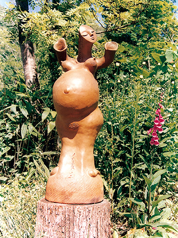 |
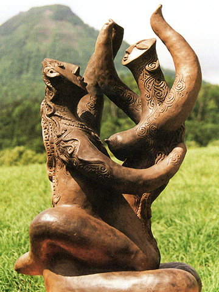 |
| 【妊婦】 |
【性愛】 |
▲ページ先頭に戻る
【第２展示室】 復活法曽焼展・綴織タペストリー展
１５０年ぶりに復活した猪風来作の法曽焼を展示。法曽古窯の発掘陶磁器片と見比べながら鑑賞できます。
焼締めの器と磁器・施釉の茶器など。
むらかみよしこ作の羊毛の手紡ぎ・草木染め・手織タペストリーは、綴織の手法で
文様や生命の躍動する自然を、草木のやわらかな色合いで表現したぬくもりのある作品です。
| 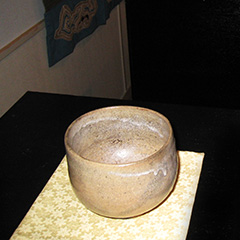 |
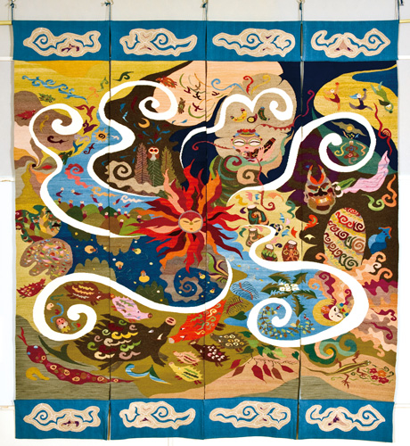 |
| 【復活法曽焼（茶器）】 |
| 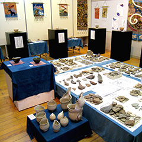 |
| 【展示風景】 |
【生命のまほろば法曽（タペストリー）】 |
▲ページ先頭に戻る
【第３展示室】 虹彩縄文
スペイン滞在中に創作したラスター彩技法の陶オブジェ作品と絵画。
２００２年、猪風来はスペイン･カタルニアのベイタイ村にアトリエを借りて作陶。
スペイン･ラスター彩の技法をマスターし、建築家アントニオ・ガウディに触発され新境地の作品を生み出した。
| 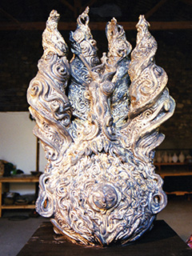 |
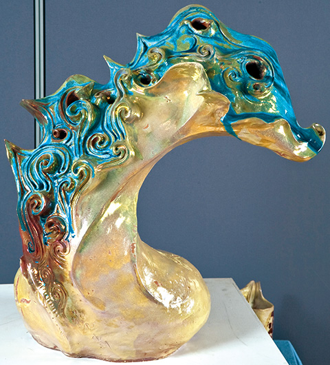 |
| 【夢見るガウティ】 |
| 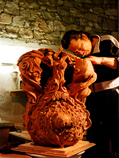 |
| 【夢見るガウティ（制作中）】 |
【青のヴィーナス】 |
▲ページ先頭に戻る
【第４展示室】 喜怒哀楽
心・魂を造形する。鬼・大道芸人などをテーマにした作品。
「叫魂華」「泣き鬼」など見る人の心の奥底に迫る迫真の造形（野焼き作品）
| 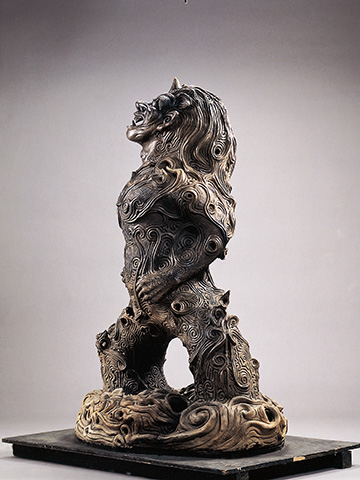 |
| 【叫魂華】 |
▲ページ先頭に戻る
【第５展示室】 森羅万象
大自然と宇宙のいとなみに感応するとき人の生命は輝きます。
「縄文の太陽」「縄文の月」「縄文山河」「虚空へ」「大地の子宮」など、
宇宙的広がりを感じさせる大型野焼き作品が、猪風来ワールドの醍醐味を伝えてくれます。
| 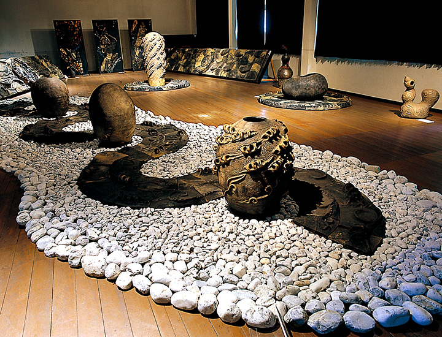 |
| 【展示室全体】 |
| |
| 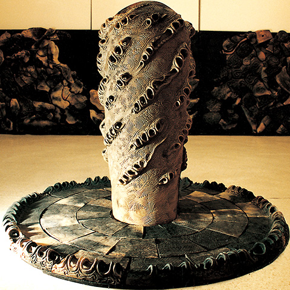 |
| 【虚空へ】 |
▲ページ先頭に戻る
【通路・吹き抜け・フリースペース】
縄文土器模写作品・猪風来オリジナル創作縄文土器・縄文太鼓・江戸期の法曽焼水甕など多数展示。
| 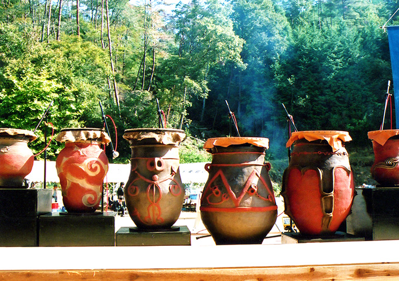 |
| 【縄文太鼓】 |
▲ページ先頭に戻る